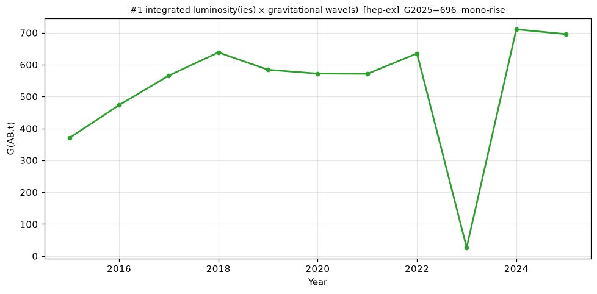
#1 integrated luminosity(ies) × gravitational wave(s) 中立 单调上升
via=upper limit(s) · I=39 · cv=0.55 · G2025=696 · peak-year=2024
理由: 通过上限约束在粒子物理与引力波数据分析中存在间接关联，但核心研究目标差异较大，融合迹象尚弱。
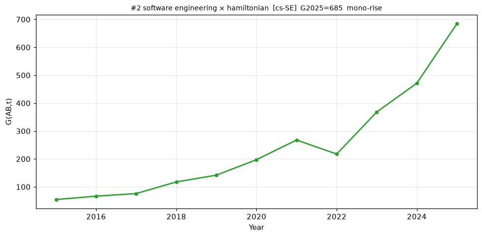
#2 software engineering × hamiltonian 中立 单调上升
via=quantum computing · I=22 · cv=0.99 · G2025=685 · peak-year=2025
理由: 量子计算桥接真实，但软件工程与哈密顿量的交叉仍偏工具性，融合深度有限。
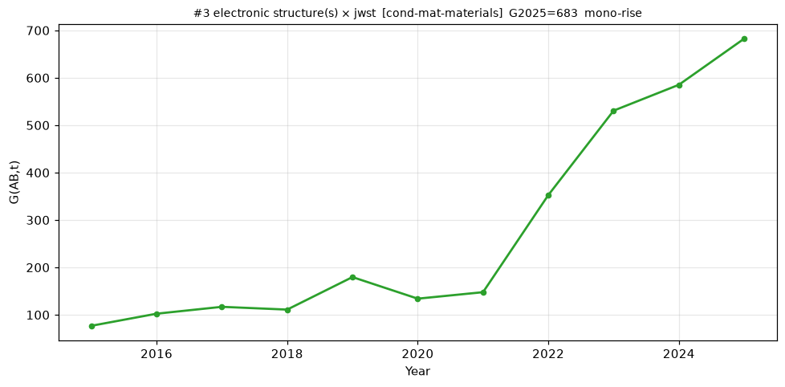
#3 electronic structure(s) × jwst 中立 单调上升
via=spectroscopy · I=35 · cv=0.99 · G2025=683 · peak-year=2025
理由: 通过光谱桥接有一定交叉价值，但电子结构计算与JWST观测的融合仍属间接，尚未形成明确研究方向。
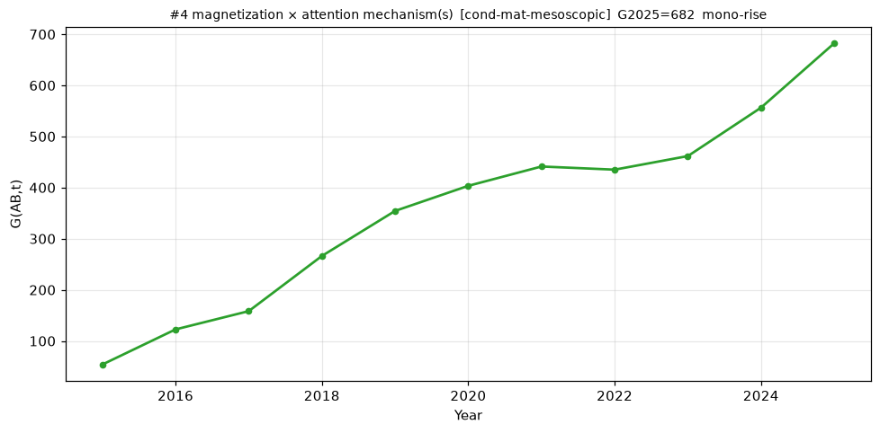
#4 magnetization × attention mechanism(s) 中立 单调上升
via=long range · I=24 · cv=0.78 · G2025=682 · peak-year=2025
理由: 通过长程关联桥接，概念真实但交叉价值偏工具性，融合迹象尚弱。
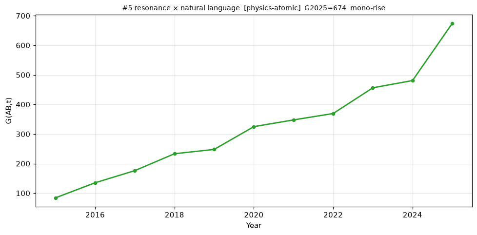
#5 resonance × natural language 中立 单调上升
via=interpretation · I=27 · cv=0.84 · G2025=674 · peak-year=2025
理由: 共振与自然语言的桥接概念interpretation较抽象，交叉价值有限，融合迹象尚弱。
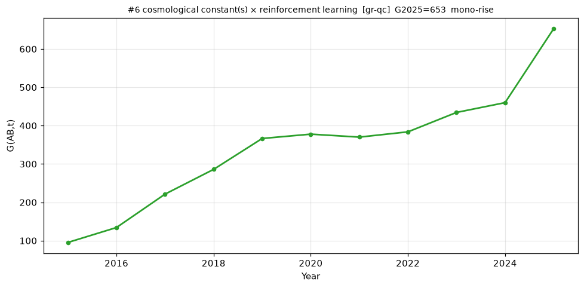
#6 cosmological constant(s) × reinforcement learning 中立 单调上升
via=entropy · I=19 · cv=0.72 · G2025=653 · peak-year=2025
理由: 通过熵桥接有一定理论联系，但强化学习在宇宙学常数问题中的应用仍属边缘探索，融合迹象尚弱。
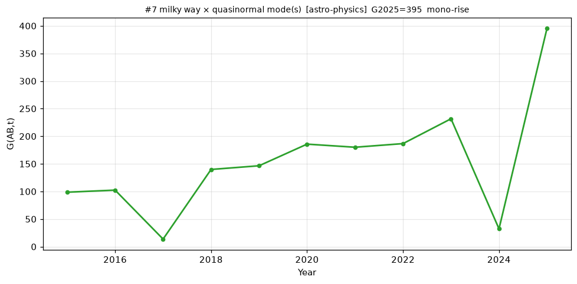
#7 milky way × quasinormal mode(s) 看好 单调上升
via=black hole(s) · I=37 · cv=0.69 · G2025=395 · peak-year=2025
理由: 通过黑洞连接星系尺度与引力波特征，交叉价值高且2025年增长显著，有融合迹象。
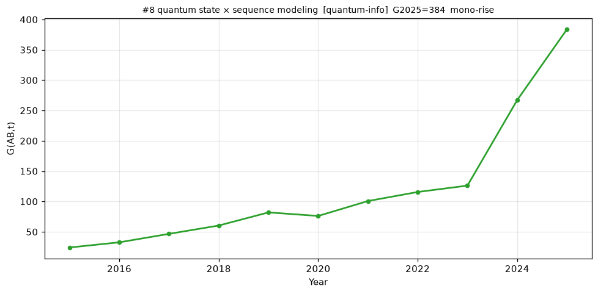
#8 quantum state × sequence modeling 看好 单调上升
via=state space(s) · I=26 · cv=0.76 · G2025=384 · peak-year=2025
理由: 量子态演化与序列建模在时间序列预测和量子机器学习中已有融合迹象，G值快速增长显示研究热度上升。
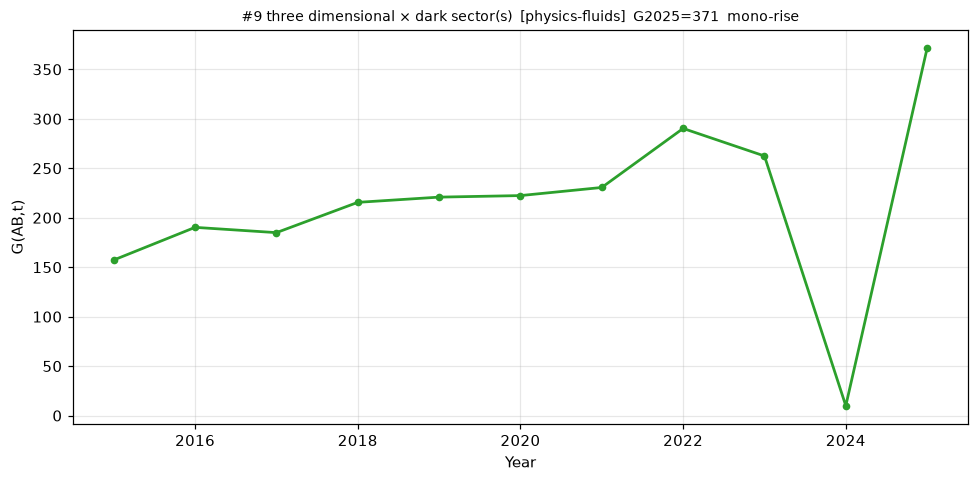
#9 three dimensional × dark sector(s) 不看好 单调上升
via=parameter space(s) · I=34 · cv=0.50 · G2025=371 · peak-year=2025
理由: 三维流体与暗物质领域概念牵强，桥接仅靠参数空间，缺乏实质交叉价值。
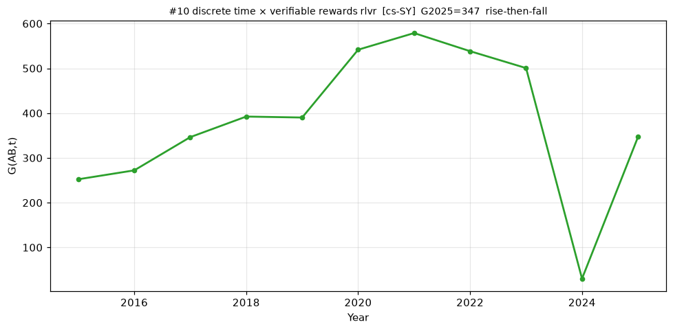
#10 discrete time × verifiable rewards rlvr 看好 先升后降(峰)
via=reinforcement learning · I=26 · cv=0.51 · G2025=347 · peak-year=2021
理由: 离散时间控制与可验证奖励强化学习结合，能提升安全关键系统的策略可靠性，已有强化学习桥接且近期热度回升。
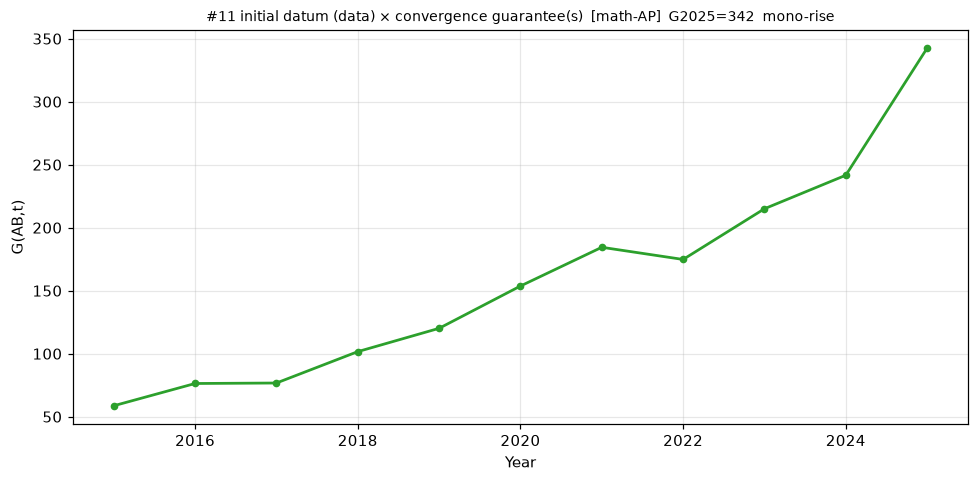
#11 initial datum (data) × convergence guarantee(s) 看好 单调上升
via=finite time · I=18 · cv=0.72 · G2025=342 · peak-year=2025
理由: 偏微分方程中初值条件与收敛性保证的结合在有限时间分析中增长显著，交叉价值高且融合迹象明确。
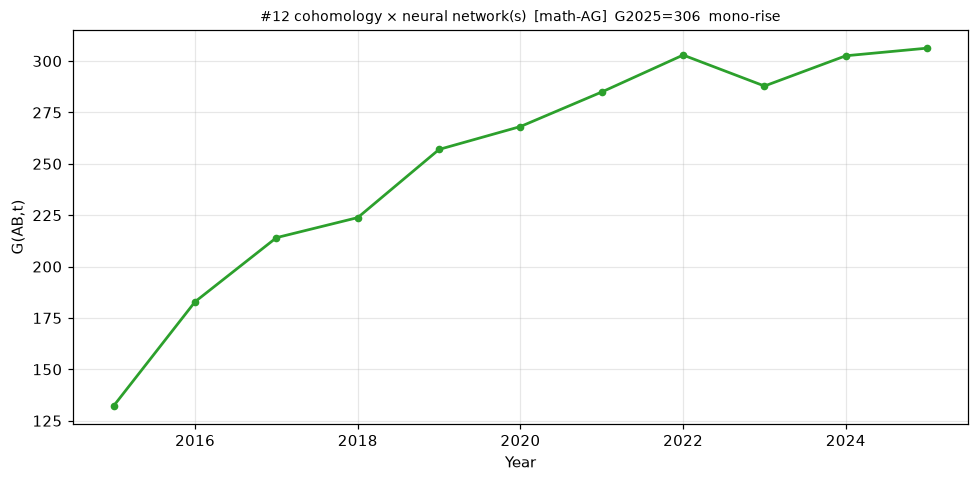
#12 cohomology × neural network(s) 看好 单调上升
via=manifold · I=17 · cv=0.48 · G2025=306 · peak-year=2025
理由: 通过流形学习连接，上同调为神经网络表征几何提供深层拓扑工具，融合迹象明显且增长稳定。
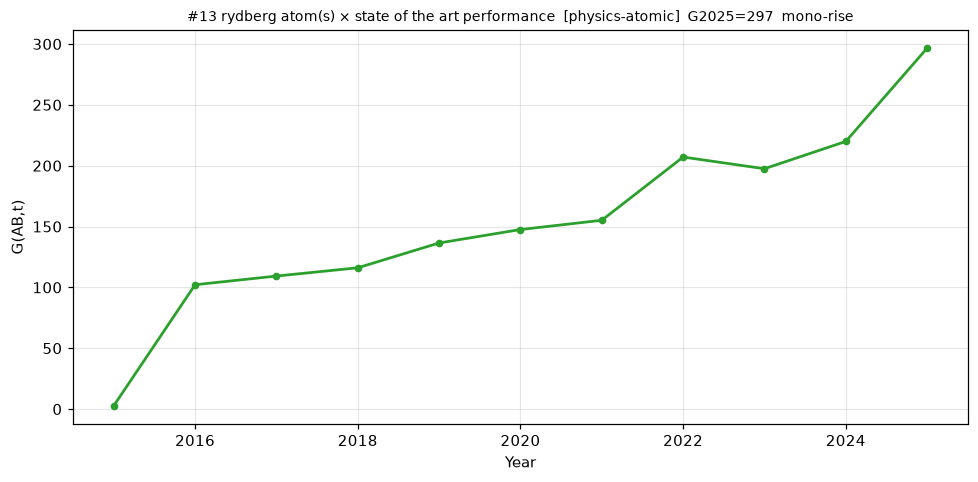
#13 rydberg atom(s) × state of the art performance 中立 单调上升
via=long range · I=15 · cv=0.73 · G2025=297 · peak-year=2025
理由: 桥接概念“long range”真实存在，但“state of the art performance”过于泛化，交叉价值有限，融合迹象弱。
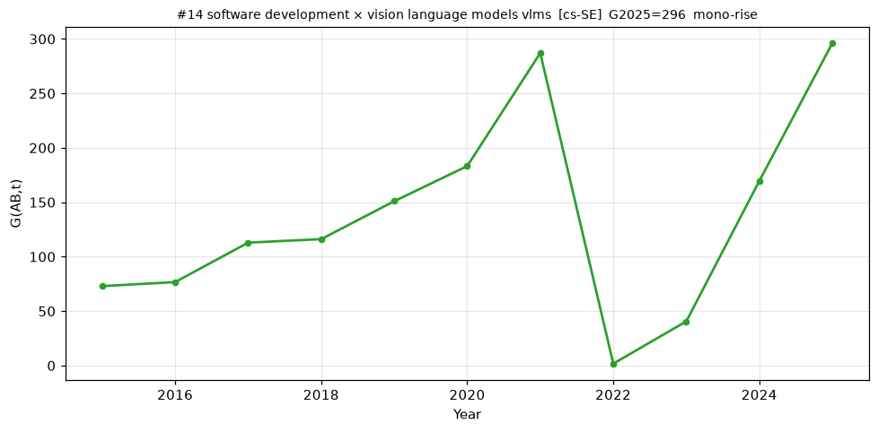
#14 software development × vision language models vlms 看好 单调上升
via=high level · I=21 · cv=0.73 · G2025=296 · peak-year=2025
理由: VLM 可辅助代码理解、UI 生成和缺陷检测，软件工程与多模态模型融合趋势明确且增长强劲。
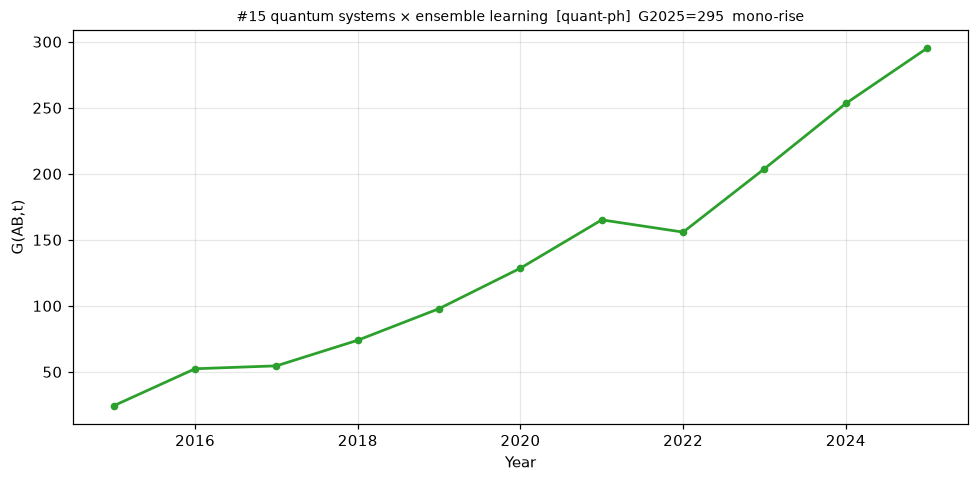
#15 quantum systems × ensemble learning 看好 单调上升
via=ensemble · I=36 · cv=0.89 · G2025=295 · peak-year=2025
理由: 量子集成学习可提升量子模型鲁棒性，G值持续增长显示融合趋势明确。
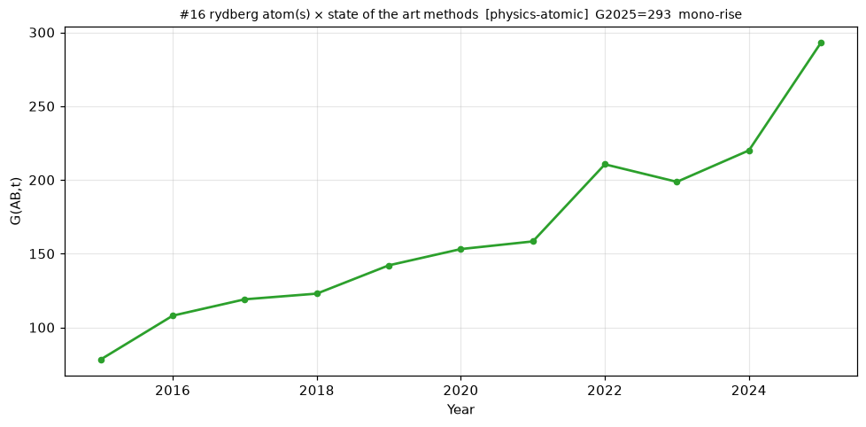
#16 rydberg atom(s) × state of the art methods 中立 单调上升
via=long range · I=15 · cv=0.65 · G2025=293 · peak-year=2025
理由: 桥接概念‘长程相互作用’真实，但‘最先进方法’过于泛化，交叉价值有限，融合迹象尚弱。
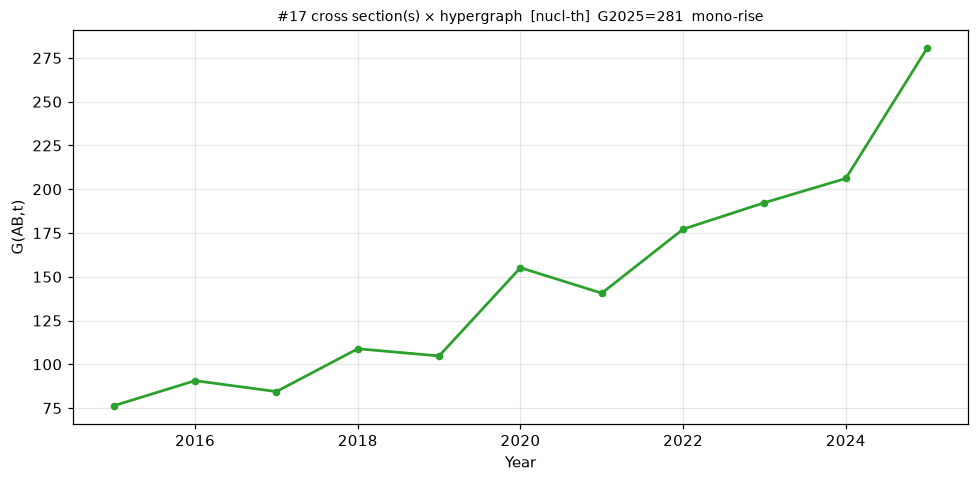
#17 cross section(s) × hypergraph 不看好 单调上升
via=higher order · I=27 · cv=0.54 · G2025=281 · peak-year=2025
理由: 核物理截面与超图组合结构缺乏实质交叉，桥接概念'higher order'过于泛化，更像术语巧合而非真实融合。
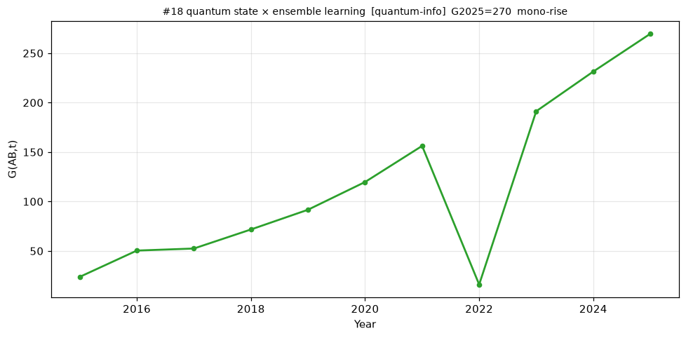
#18 quantum state × ensemble learning 看好 单调上升
via=ensemble · I=29 · cv=0.94 · G2025=270 · peak-year=2025
理由: 量子态与集成学习的结合在量子机器学习中已有可见融合，G值持续上升显示研究热度增强。
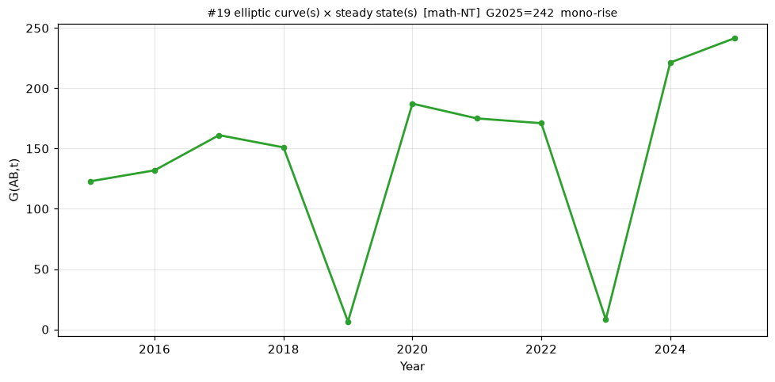
#19 elliptic curve(s) × steady state(s) 不看好 单调上升
via=conductor · I=7 · cv=0.47 · G2025=242 · peak-year=2025
理由: 椭圆曲线与稳态分属数论与动力系统，桥接概念conductor牵强，缺乏真实交叉价值。
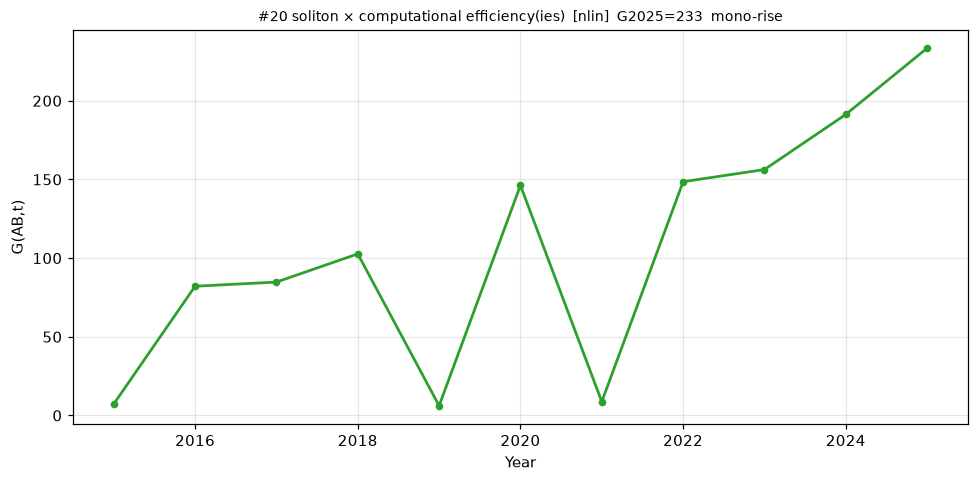
#20 soliton × computational efficiency(ies) 中立 单调上升
via=numerical simulation(s) · I=28 · cv=0.98 · G2025=233 · peak-year=2025
理由: 孤子数值模拟确实关注计算效率，但交叉价值偏工具性，尚未形成独立研究方向。
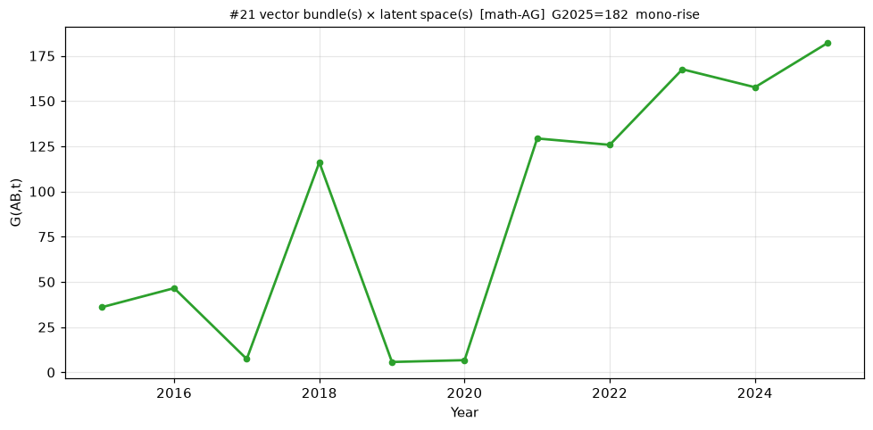
#21 vector bundle(s) × latent space(s) 中立 单调上升
via=manifold · I=13 · cv=0.98 · G2025=182 · peak-year=2025
理由: 通过流形桥接在数学上有一定联系，但向量丛与隐空间的交叉价值尚不明确，融合迹象偏弱。
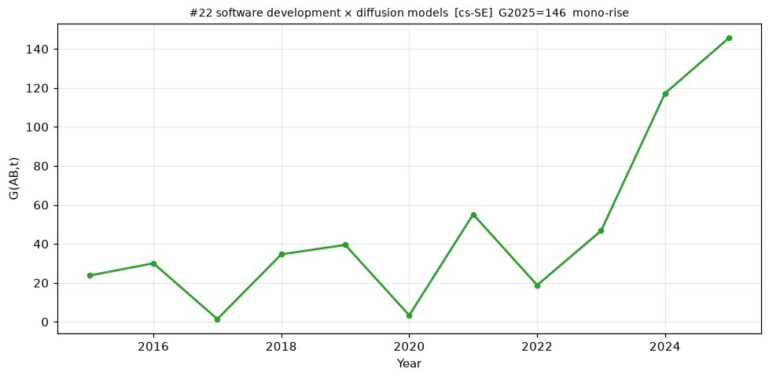
#22 software development × diffusion models 看好 单调上升
via=generative ai · I=33 · cv=0.98 · G2025=146 · peak-year=2025
理由: 生成式AI在代码生成与软件工程任务中的应用正快速升温，扩散模型作为新兴生成范式具备真实交叉潜力。
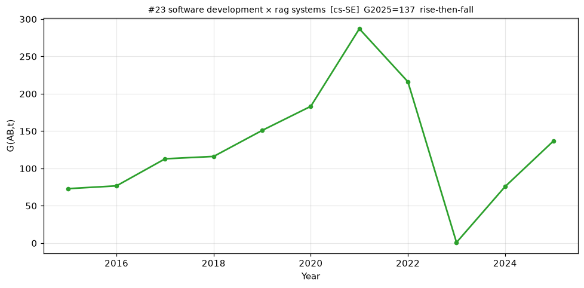
#23 software development × rag systems 看好 先升后降(峰)
via=retrieval augmented generation rag · I=17 · cv=0.65 · G2025=137 · peak-year=2021
理由: RAG 正从通用问答进入软件工程工具链，代码检索与生成场景融合迹象明显，G 值回升且桥接概念具体。
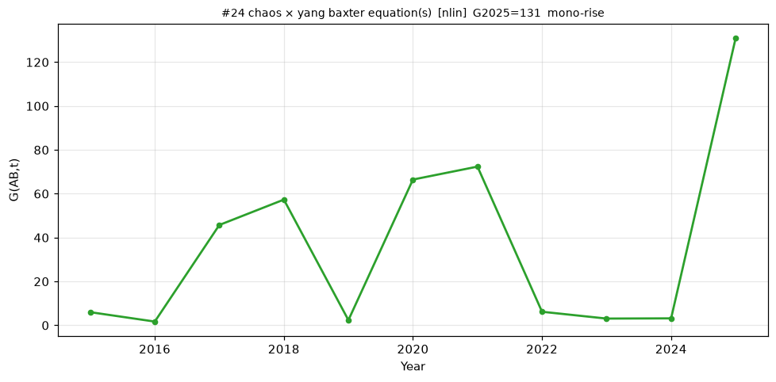
#24 chaos × yang baxter equation(s) 看好 单调上升
via=integrability · I=14 · cv=1.00 · G2025=131 · peak-year=2025
理由: 通过可积性桥接，混沌与杨-巴克斯特方程在非线性可积系统中有深层联系，G2025值显著上升显示融合加速。
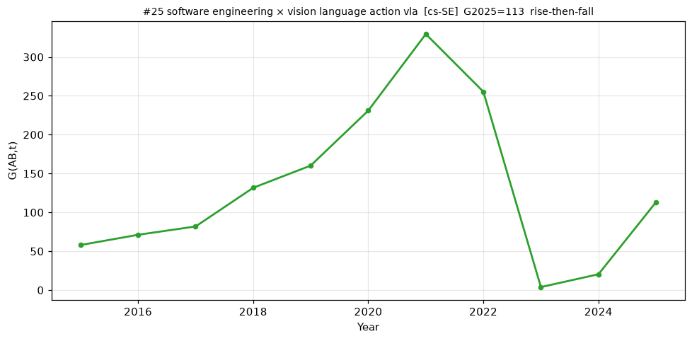
#25 software engineering × vision language action vla 中立 先升后降(峰)
via=success rate(s) · I=29 · cv=0.84 · G2025=113 · peak-year=2021
理由: VLA在软件工程中可辅助GUI测试或代码生成，但当前桥接仅靠成功率指标，融合迹象尚弱。
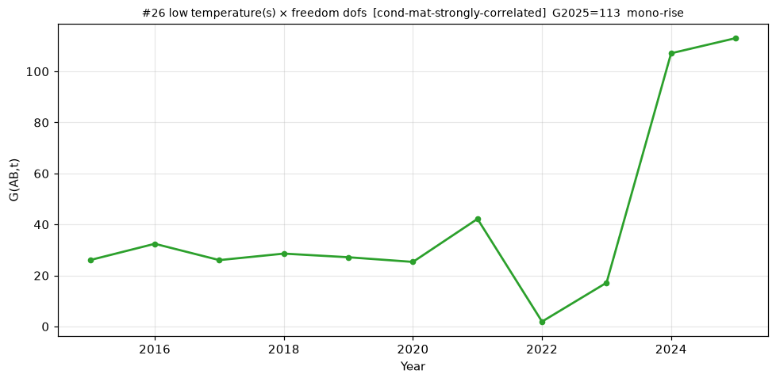
#26 low temperature(s) × freedom dofs 看好 单调上升
via=degrees of freedom · I=30 · cv=0.83 · G2025=113 · peak-year=2025
理由: 低温下自由度冻结与强关联效应是凝聚态物理核心问题，G2025值高且近期增长明显，交叉价值真实。
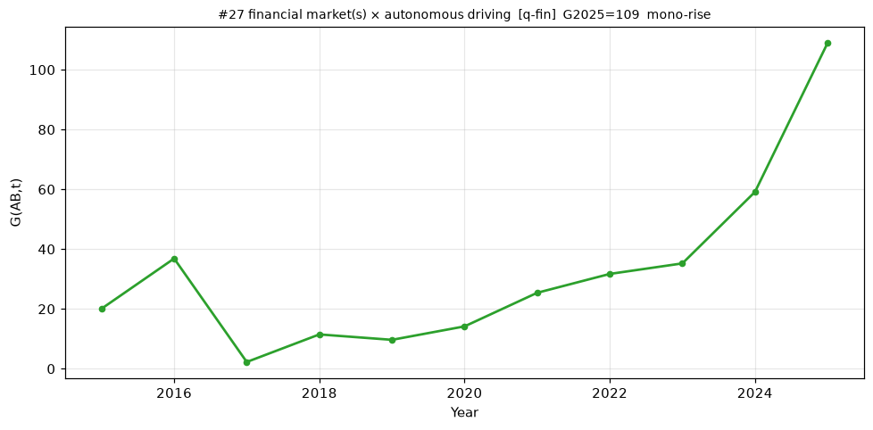
#27 financial market(s) × autonomous driving 中立 单调上升
via=decision making(s) · I=22 · cv=0.85 · G2025=109 · peak-year=2025
理由: 两者通过决策机制间接关联，但金融市场与自动驾驶的核心问题差异较大，融合迹象有限。
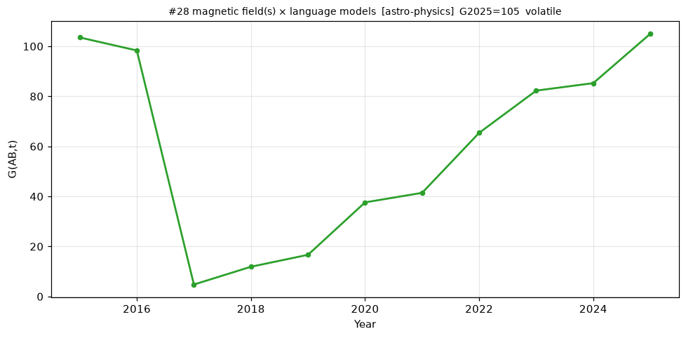
#28 magnetic field(s) × language models 不看好 波动
via=small scale · I=33 · cv=0.72 · G2025=105 · peak-year=2025
理由: 磁场与语言模型分属物理和NLP，桥接概念‘small scale’过于泛化，缺乏真实交叉价值。
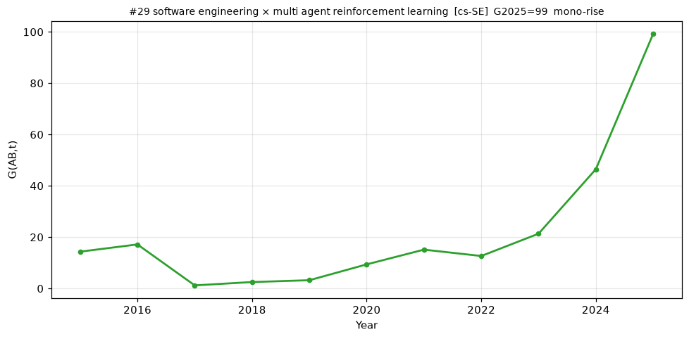
#29 software engineering × multi agent reinforcement learning 看好 单调上升
via=multi agent · I=30 · cv=0.99 · G2025=99 · peak-year=2025
理由: 多智能体强化学习可为软件工程中的协同开发、测试与调度提供新范式，G值近年显著上升显示融合加速。
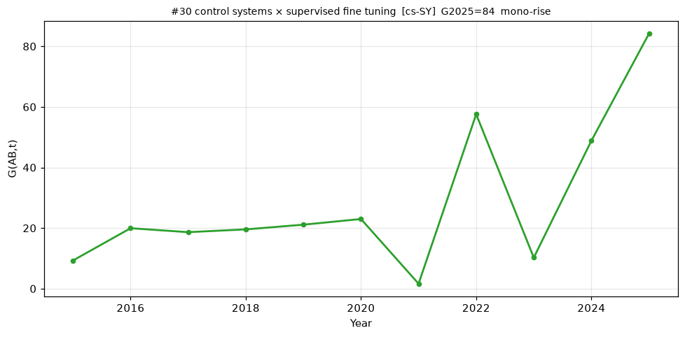
#30 control systems × supervised fine tuning 中立 单调上升
via=reinforcement learning · I=22 · cv=0.80 · G2025=84 · peak-year=2025
理由: 控制理论与监督微调通过强化学习桥接，但直接交叉价值有限，融合迹象尚弱。
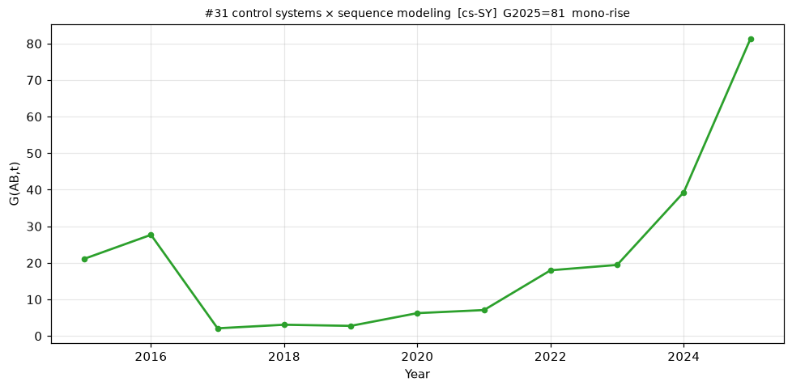
#31 control systems × sequence modeling 看好 单调上升
via=state space(s) · I=18 · cv=0.89 · G2025=81 · peak-year=2025
理由: 状态空间模型桥接控制与序列建模，G2025激增显示融合加速，是神经控制与时间序列分析的新兴方向
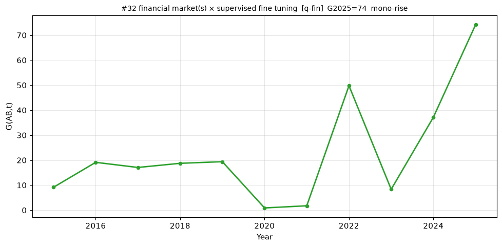
#32 financial market(s) × supervised fine tuning 中立 单调上升
via=reinforcement learning · I=22 · cv=0.91 · G2025=74 · peak-year=2025
理由: 强化学习桥接显示金融与微调有潜在结合点，但当前融合迹象尚弱，交叉价值一般。
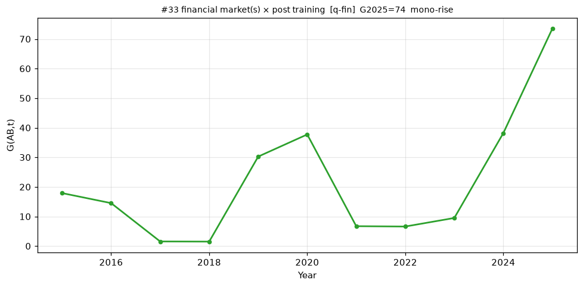
#33 financial market(s) × post training 看好 单调上升
via=reinforcement learning · I=22 · cv=0.89 · G2025=74 · peak-year=2025
理由: 强化学习桥接真实，金融决策与模型后训练融合迹象明显，G2025激增反映研究热度。
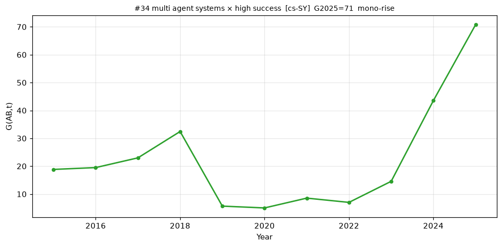
#34 multi agent systems × high success 中立 单调上升
via=success rate(s) · I=22 · cv=0.86 · G2025=71 · peak-year=2025
理由: 成功率高是系统性能指标，交叉价值一般，且G序列波动大，融合迹象尚弱。
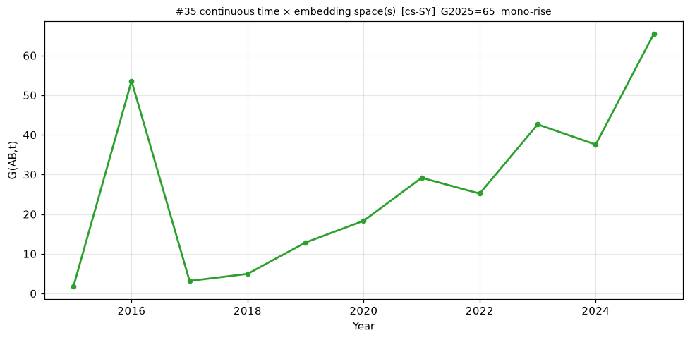
#35 continuous time × embedding space(s) 看好 单调上升
via=embedding · I=18 · cv=0.76 · G2025=65 · peak-year=2025
理由: 连续时间动态与嵌入空间的结合在时序图神经网络和动态系统建模中融合迹象明显，交叉价值高。
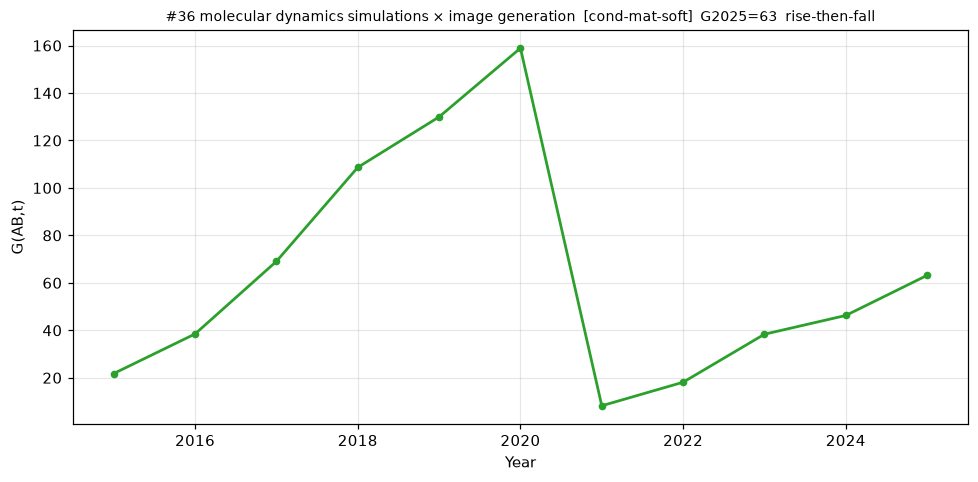
#36 molecular dynamics simulations × image generation 看好 先升后降(峰)
via=diffusion · I=20 · cv=0.85 · G2025=63 · peak-year=2020
理由: 扩散模型在分子构象生成与动力学增强中已有实质交叉，G值回升显示融合加速。
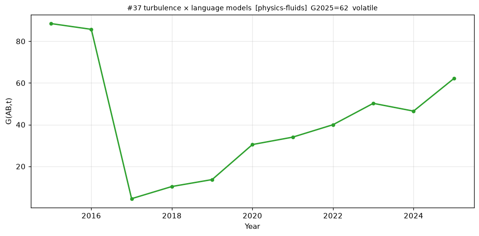
#37 turbulence × language models 中立 波动
via=small scale · I=33 · cv=0.68 · G2025=62 · peak-year=2015
理由: 湍流小尺度建模与语言模型有间接关联，但交叉价值有限，融合迹象尚弱。
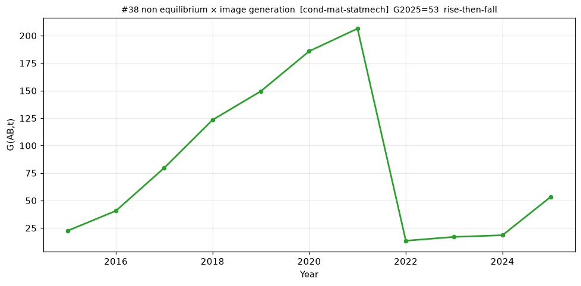
#38 non equilibrium × image generation 看好 先升后降(峰)
via=diffusion · I=31 · cv=1.00 · G2025=53 · peak-year=2021
理由: 扩散模型本质是非平衡热力学过程，交叉价值高且已有生成建模融合迹象
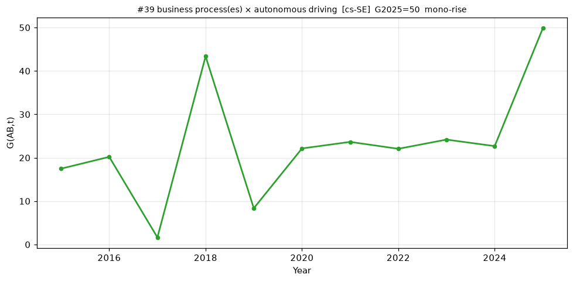
#39 business process(es) × autonomous driving 中立 单调上升
via=decision making(s) · I=10 · cv=0.53 · G2025=50 · peak-year=2025
理由: 决策制定桥接真实存在，但业务流程管理与自动驾驶核心研发交叉价值有限，融合迹象尚弱。
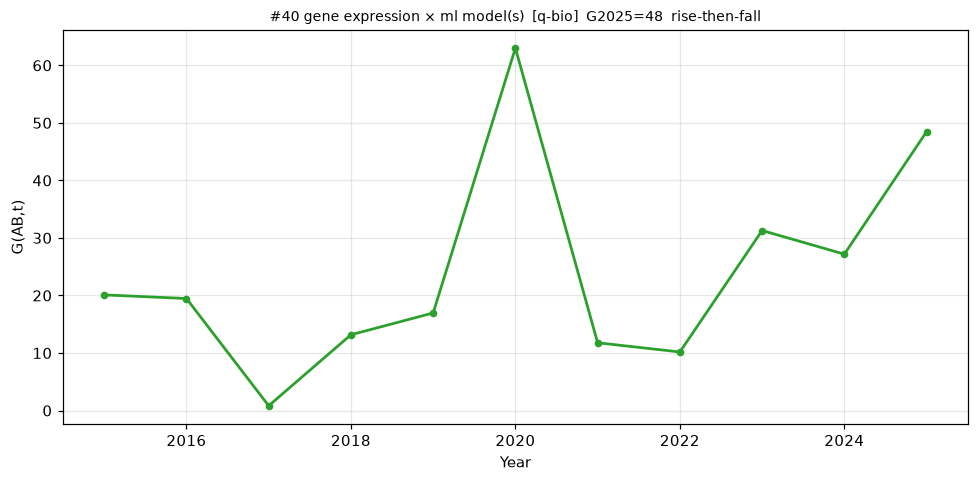
#40 gene expression × ml model(s) 看好 先升后降(峰)
via=machine learning · I=14 · cv=0.75 · G2025=48 · peak-year=2020
理由: 机器学习在基因表达分析中已有大量应用，且G2025值高，融合趋势明确。
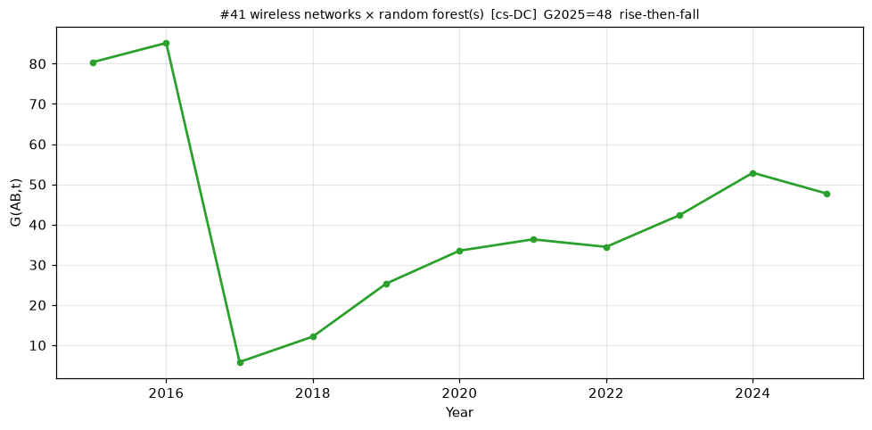
#41 wireless networks × random forest(s) 中立 先升后降(峰)
via=machine learning · I=22 · cv=0.67 · G2025=48 · peak-year=2016
理由: 随机森林在无线网络异常检测和资源分配中有实际应用，但属于成熟机器学习方法，交叉创新性一般。
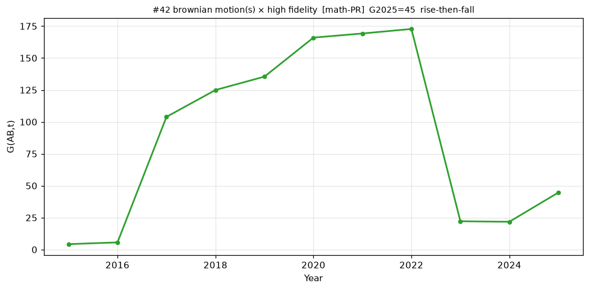
#42 brownian motion(s) × high fidelity 中立 先升后降(峰)
via=diffusion · I=39 · cv=0.66 · G2025=45 · peak-year=2022
理由: 通过扩散模型桥接，概念真实但高保真更多是应用目标，交叉价值一般，融合迹象尚弱。
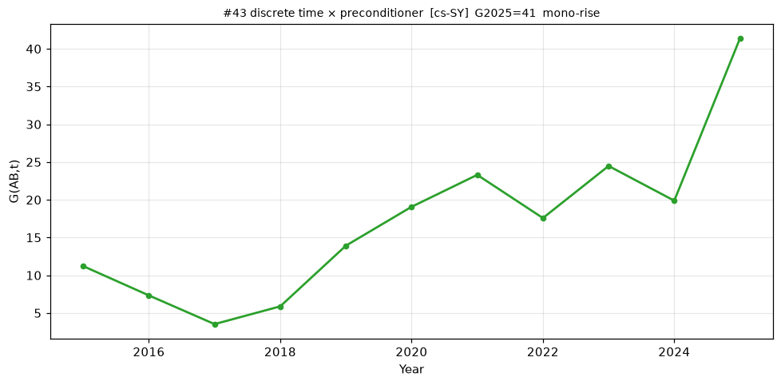
#43 discrete time × preconditioner 中立 单调上升
via=linear systems · I=27 · cv=0.67 · G2025=41 · peak-year=2025
理由: 离散时间系统与预条件子在数值线性代数中确有交叉，但当前融合迹象主要来自求解器效率需求，尚未形成独立研究方向。
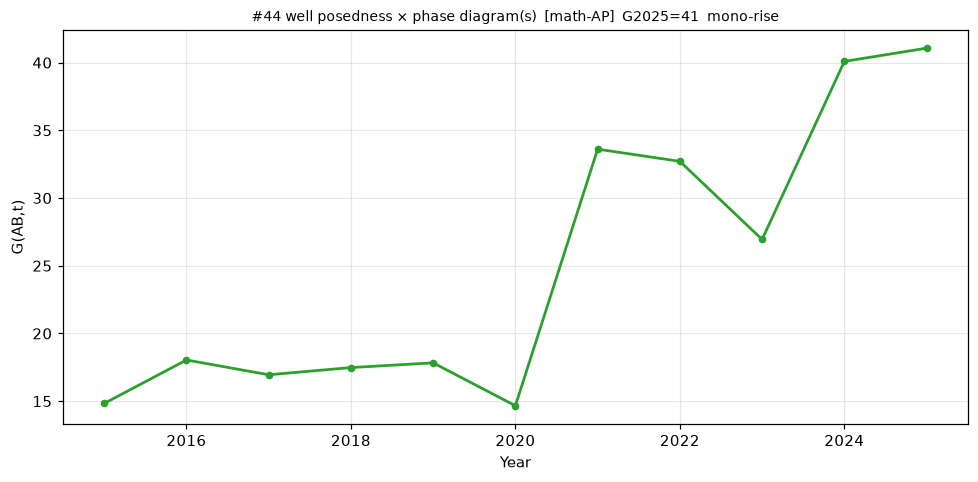
#44 well posedness × phase diagram(s) 中立 单调上升
via=two dimensional · I=28 · cv=0.61 · G2025=41 · peak-year=2025
理由: 两者在数学物理中均有真实意义，但交叉多限于二维系统，融合迹象尚弱且增长平稳。
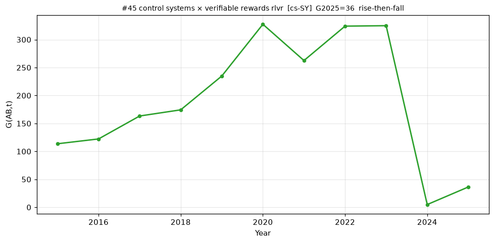
#45 control systems × verifiable rewards rlvr 中立 先升后降(峰)
via=reinforcement learning · I=22 · cv=0.67 · G2025=36 · peak-year=2020
理由: 控制理论与可验证奖励强化学习确有交叉潜力，但当前融合迹象尚弱，G值波动大且2024年骤降，需更多实证支撑。
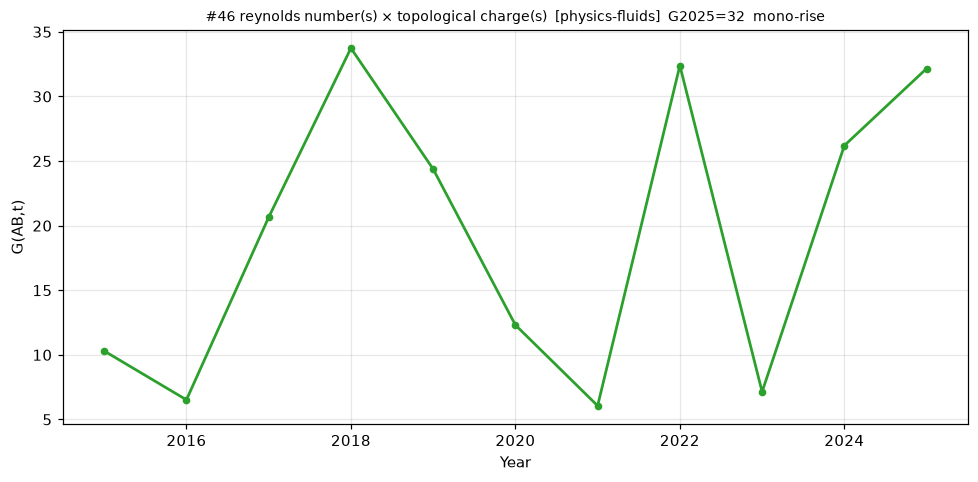
#46 reynolds number(s) × topological charge(s) 中立 单调上升
via=vortex · I=25 · cv=0.75 · G2025=32 · peak-year=2018
理由: 通过涡旋连接流体力学与拓扑概念，交叉价值存在但当前融合迹象波动较大，尚未形成稳定趋势。
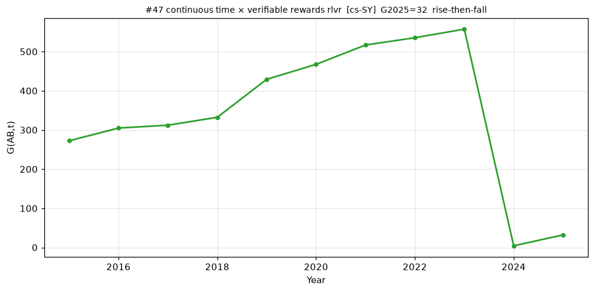
#47 continuous time × verifiable rewards rlvr 中立 先升后降(峰)
via=reinforcement learning · I=37 · cv=0.53 · G2025=32 · peak-year=2023
理由: 连续时间控制与可验证奖励强化学习有理论交叉价值，但当前融合迹象弱且G序列在2024年骤降，尚缺可见研究趋势。
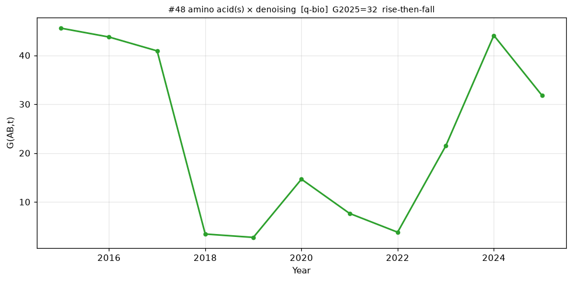
#48 amino acid(s) × denoising 中立 先升后降(峰)
via=diffusion · I=7 · cv=0.59 · G2025=32 · peak-year=2015
理由: 通过扩散模型连接氨基酸序列与去噪，概念真实但交叉价值集中在生成模型工具层面，融合迹象尚弱。
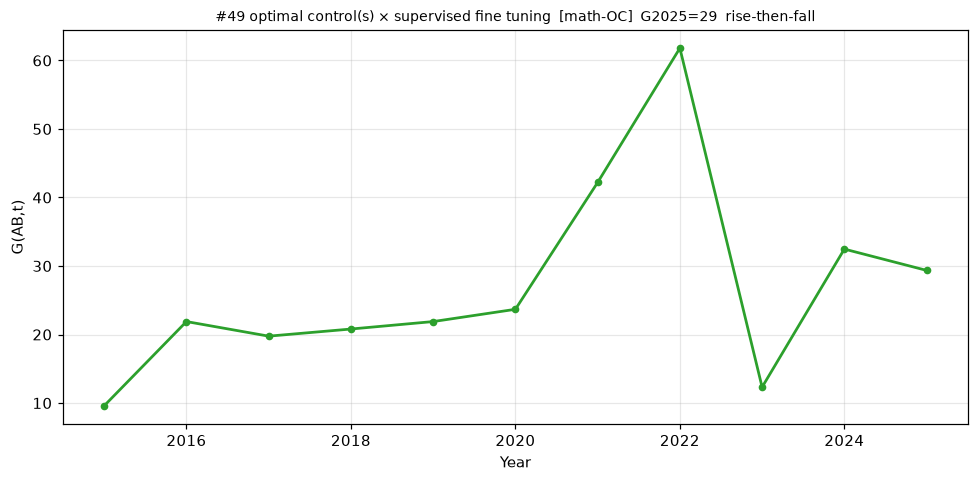
#49 optimal control(s) × supervised fine tuning 看好 先升后降(峰)
via=reinforcement learning · I=32 · cv=0.94 · G2025=29 · peak-year=2022
理由: 最优控制为监督微调提供动态优化框架，强化学习桥接使两者在机器人策略微调中已有融合迹象
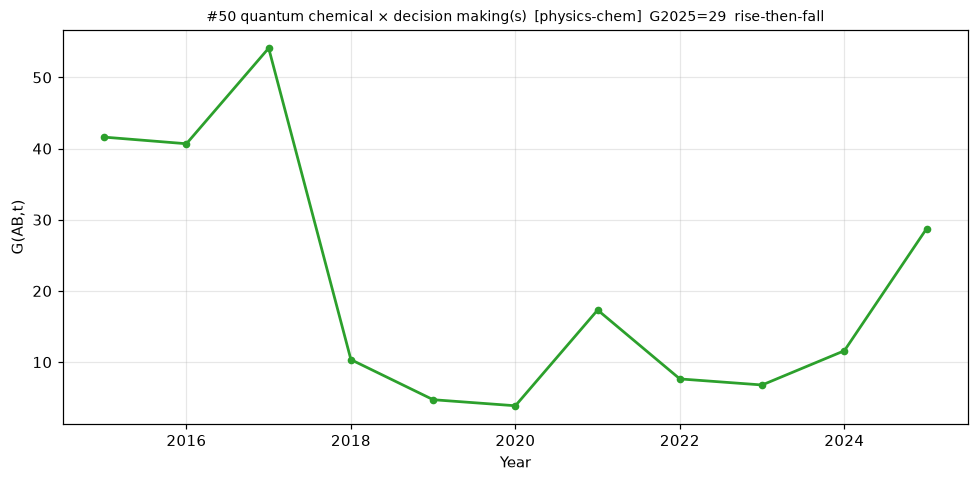
#50 quantum chemical × decision making(s) 中立 先升后降(峰)
via=machine learning · I=17 · cv=0.80 · G2025=29 · peak-year=2017
理由: 通过机器学习桥接有一定交叉可能，但量子化学与决策的融合仍较间接，当前迹象偏弱。